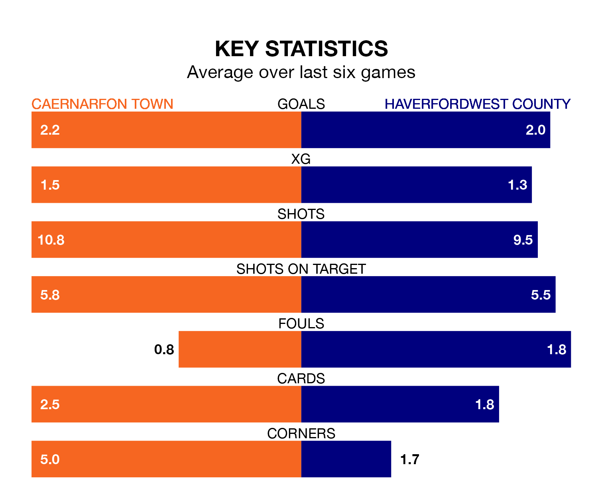

Haverfordwest County travel to Caernarfon Town on early Saturday in the Cymru Premier.
The visitors come into the game on the back of a draw in their last match, having tied with Cardiff Met 1-1 at home, with a goal from Ben Fawcett.
The Canaries, meanwhile, won their last match, 2-1 against Pontypridd Town AFC, with their goals scored by Sion Bradley and Zack Clarke.
With 35 goals in 18 games so far this season, Caernarfon are the league's third-highest scorers with 1.9 goals per game. But they are conceding more than average too, letting in 35 goals at a rate of 1.9 per game.
Haverfordwest, meanwhile, are below average scorers, with 1.4 goals per game, compared to a league average of 1.5. They have conceded 1.6 goals per game.
In Adam Davies, Town have one of the league's most on-form strikers so far this season. He has notched 11 goals in 16 appearances, to sit third in the scoring charts.
His goal rate of one every 109 minutes is much quicker than that of Martell Taylor-Crossdale, County's top scorer with a goal every 220 minutes, and a total of five goals in 14 games.
The Canaries are in mixed form in the Cymru Premier, with two wins and a draw from their last six games.
With three wins and two draws over that period, the Bluebirds' form is better – they have taken 11 points from 18, compared to the home team's seven.
The visitors are eighth in the table after 17 games, of which they have won five and drawn six, earning 21 points.
Caernarfon are two places ahead of Haverfordwest in sixth, with eight wins and three draws putting them on 27 points.
In the last three years, Caernarfon and Haverfordwest have played each other on seven occasions. Caernarfon won four of them, Haverfordwest one, and they drew twice.
On average, the Canaries scored 1.6 goals and the Bluebirds 0.9 in those matches.
Their last meeting was on August 26, when they played out a 1-1 draw.
